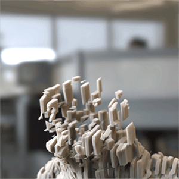
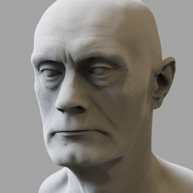
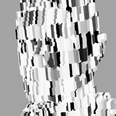
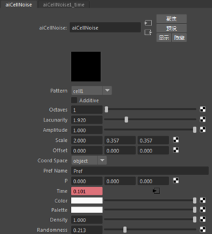
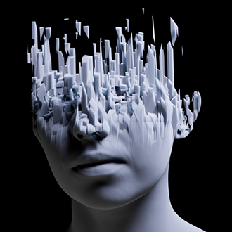
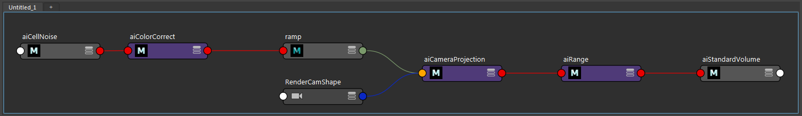

将单元噪波连接到体积置换的动画效果

我们可以将多边形网格对象渲染为体积。这提供了许多创意机会，以各种各样有趣的方式渲染实体对象。这个简短的制作教程介绍了如何使用 standard_volume 着色器的“置换”(Displacement)*属性，将一个多边形网格和一个体积的着色合并在一起，以实现组合它们的效果。此外，我们还将介绍如何使用连接到 *standard_volume 着色器的 volume_displacement 的 cell_noise、color_correct、ramp_rgb 和 range 着色器来重现上述动画效果。
注意：
多边形网格应闭合且没有任何自交，否则体积可能无法正确渲染。
步长(Step Size)
- 首先，我们需要将头部网格转化为体积。选择网格，然后在它的 Arnold 属性中，将“步长”(Step Size)增大到 0.1。当“步长”(Step Size)为正值时，会将多边形网格渲染为体积，其值将用作光线行进体积时的基准步长。
注意：
有关体积 step_size 的详细信息，请单击此处。
有关对应的基本场景文件，请单击此处。
标准体积
- 为多边形网格指定 standard_volume 着色器，并将“密度”(Density)*增大到 *4000 左右的一个较高值。这将确保置换纹理稍后看起来更明确。

将头部网格渲染为体积
范围
- 将范围*着色器连接到 *standard_volume 着色器的 volume_displacement。
- 将其 output_max 值增加到 30 左右。将 cell_noise 着色器连接到 volume_displacement 后，这将增强 volume_displacement 的效果。
摄影机投影
为了从上到下设置效果的动画，我们将通过 V 方向投影渐变。
渐变 RGB
- 创建一个 ramp_rgb 着色器，并将其连接到 camera_projection 着色器的 projection_color。
颜色校正
- 连接 color_correct 着色器，并将其连接到 ramp_rgb 着色器的输入*。可以使用此着色器微调 *cell_noise 着色效果。
单元噪波
- 创建一个 cell_noise 着色器。
- 将图案更改为 cell1。
- 禁用“相加”(additive)。
- 确保将 coord_space 设置为“对象”(Object)。
- 您需要根据场景大小来调整“缩放”(scale)*。在本例中，由于 Y 和 Z 小于 X，因此 *cell_noise 较细。
- 将“密度”(density)增加到 1，并将“随机度”(randomness)设置为 0.2 左右，以添加一些不规则形状。

最终 cell_noise 设置

动画
- 基于时间从左向右对 ramp_rgb 的黑色设置关键帧，以查看在头部体积中从下到上移动的效果。
- 对 cell_noise 着色器的“时间”(time)*属性设置关键帧，以设置 *cell_noise 效果的动画。
总结
就是这样。请记得在渲染最终动画时，为场景中的任何灯光增加 volume_samples。

沿 Y 轴缩放 cell_noise 的更多示例

最终的着色网络